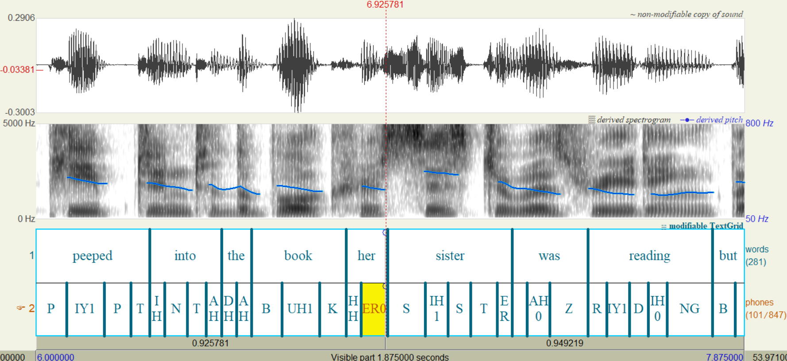
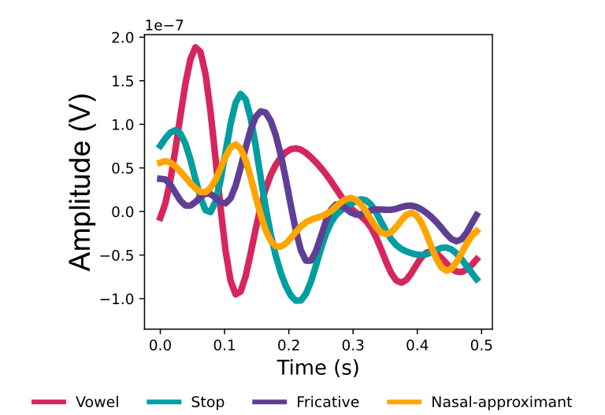

Introduction
A phoneme-related potential (PRP) is an event-related potential (ERP) time-locked to a phoneme. PRPs are particularly useful for examining neural encoding of phonemic information in continuous, naturalistic speech, such as spoken sentences and audiobooks. The following articles provide useful introductions to PRPs and related approaches:
-
Khalighinejad, B., Cruzatto da Silva, G., & Mesgarani, N. (2017). Dynamic encoding of acoustic features in neural responses to continuous speech. The Journal of Neuroscience, 37(8), 2176-2185.
-
Aldag, N., & Nogueira, W. (2024). Phoneme-related potentials recorded from normal hearing listeners and cochlear implant users in a selective attention paradigm to continuous speech. Hearing Research, 454, 109136.
-
Guo, Z.-C., McHaney, J. R., Parthasarathy, A., McFarlane, K. A., & Chandrasekaran, B. (2025). Reduced neural distinctiveness of speech representations in the middle-aged brain. Neurobiology of Language, 6, nol_a_00169.
-
Guo, Z.-C., McFarlane, K. A., McHaney, J. R., Choksi, I., Feeney, M., Preston, L., & Chandrasekaran, B. (2026). Stability of phoneme-related potentials across testing sessions and stimulus presentation conditions. Preprint.
By reading through these papers, you'll get a good basic understanding of what PRPs are like and how we may analyze them. The following sections briefly introduce some key properties of PRPs.
Phonemes
Phonemes are the smallest sound units in a language that can distinguish word meanings. For example, the word cat consists of three phonemes K, AE, and T in ARPAbet notation (IPA: /kæt/), and replacing the initial phoneme K with P gives the word pat. General American English is commonly described as having approximately 40 phonemes, although the size and composition of the phoneme inventory vary across English dialects and phonological analyses.
Phonemes are abstract sound categories, so the exact acoustic-phonetic realization of a given phoneme can vary considerably depending on factors such as its position within a word or prosodic unit. For example, the T at the beginning of tack is typically aspirated (transcribed phonetically in IPA as [tʰ]), whereas the T at the end of cat is often unaspirated and unreleased (IPA: [t̚]). If you don't have a background in linguistics and would like to learn more about phonetics and phonology, the book A Course in Phonetics by Peter Ladefoged and Keith Johnson is good resource for self-study.
Analyzing PRPs requires time-aligned phoneme annotations for your speech stimuli. These annotations are commonly stored in TextGrid files, which can be opened, viewed, and edited using the phonetic analysis software Praat as shown below. Initial phoneme boundaries and labels can be generated automatically using a forced aligner such as the Montreal Forced Aligner. When the corpus is manageable and sufficient time and resources are available, you may ask trained phoneticians to review and correct the automatically generated annotations. Forced alignment may be less accurate for speech that differs substantially from the aligner’s training data, including foreign-accented, highly spontaneous, very rapid, or poorly intelligible speech.

PRP morphologies
For each participant, the PRP associated with a given phoneme can be obtained by averaging EEG responses time-locked to all instances of that phoneme, typically over a window from 0 to 500 ms after phoneme onset. PRP waveforms exhibit distinct morphologies depending on the phonemes'manner of articulation. The figure below shows typical, textbook-like average PRP profiles for four broad manner classes: vowels, fricatives, stops, and nasal-approximants.

Most of the separation among manner classes occurs within the first 300 ms after phoneme onset, and the PRP waveforms tend to become relatively flat after approximately 300 ms. Note that the example waveforms shown above were averaged across more than 10 participants listening to audiobook speech in quiet. PRPs from individual participants or those measured under noisy listening conditions may exhibit substantially greater variability and noise. Also note that nasals and approximants are grouped into a single manner class here because they form a natural class characterized by the phonological features [-syllabic, +sonorant]. However, they may also be analyzed as separate manner classes, depending on the research question.
F-statistic and classification
One useful analysis is to examine the neural separability of these linguistically relevant manner classes. The separability can be quantified by calculating an F-statistic from the PRP amplitudes at each time point and electrode. The F-statistic is the ratio of variability between manner classes to variability within each manner class. That is, it compares amplitude differences across manners with the variability among phonemes belonging to the same manner (e.g., vowels, such as AE, EH, IY, etc.). Larger F-statistics indicate greater neural differentiation among manner classes. The largest F-statistics are typically observed over frontocentral electrodes. Their temporal profiles may exhibit two or three distinct peaks at approximately 70, 100, and 200 ms after phoneme onset, referred to as R1, R2, and R3, respectively. Not all peaks are necessarily present in every dataset, but the first two are typically observed for PRPs elicited by speech presented in quiet.
Another way to measure the manner separability is to use machine-learning classification. You can train a classifier (e.g., support vector machine, linear discriminant analysis) using the entire PRP curves or amplitudes at specific time points as features. Higher classification is interpreted as greater manner-class separability.
There are a few considerations when applying machine-learning analyses to PRPs. First, in addition to classification accuracy, you can examine prediction entropy if the model outputs a probability distribution over classes. Entropy is higher when the predicted probabilities are more evenly distributed across classes, indicating greater uncertainty in the model’s predictions. It may therefore provide additional insight that complements classification accuracy. Second, before interpreting differences between conditions/groups, check if classification performance is above chance in at least one condition/group. Failure to achieve classification performance significantly above chance may indicate that the model has learned noise rather than reliable neural patterns associated with the target classes. Third, you may want to train your model using cross-validation (so that it doesn't overfit) and hyperparameter tuning/selection (if your model has hyperparameters). Fourth, it's also possible to train the model to predict individual phonemes rather than manners and use a more sophisiticated neural netowrk (see Guo et al. (2005)). It's important to note that there may not be a all-size-fits-all approach for all EEG datasets: sometimes a method that works for one dataset can fail to yield above-chance accuracy for another dataset. It's advisable to begin with a relatively simple and interpretable method, or one which you're already familiar with, before exploring more sophisticated alternatives.
PRP classification belongs to a more general topic of machine learning classification (see Xie et al. (2019) for a review). It takes some trial and error to determine which approach makes most sense for your specific dataset.
Accent-related potential
In addition to phonemes, you can extract ERPs time-locked to other linguistic events such pitch accents. In this case, you'll obtain the so-called accented-related potential (ARP). See the following article for a previous ARP study.
Llanos, F., German, J. S., Gnanateja, G. N., & Chandrasekaran, B. (2021). The neural processing of pitch accents in continuous speech. Neuropsychologia, 158, 107883.